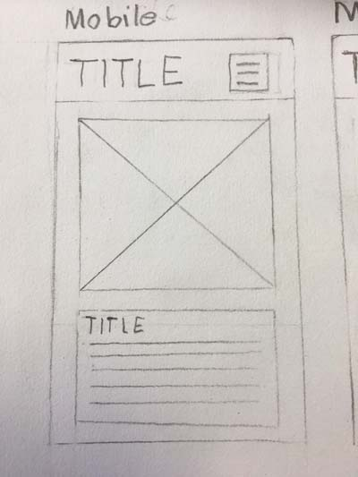
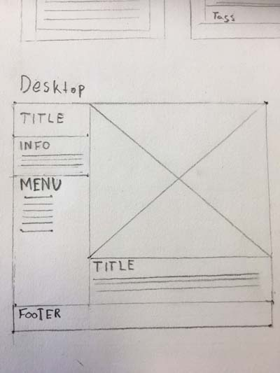
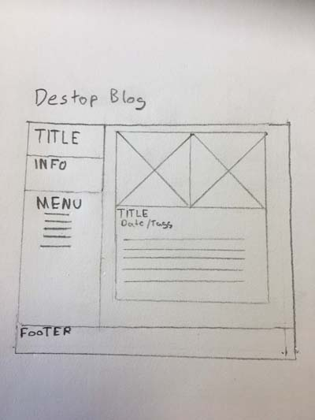
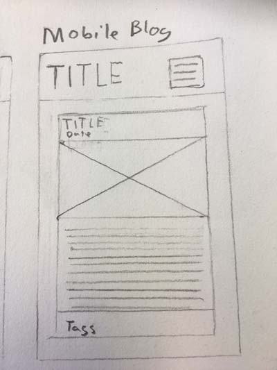

What a responsive site is, and why responsiveness is important.
Responsive sites are sites that can are design to best use the screen on the mobile device such as a IPhone. It’s important as It allows the user to
access the information without requiring a desktop computer. Above all it’s that accessibility is important for our users. For example family may not have access to a desktop computer but they have access to a phone.
What mobile first design is, and why it's important.
Mobile first design looks at focusing on the bare bones features and information that are needed in the website then introducing more as the website is developed in
powerful devices.
Why this is important in traditional web design has ben focused on desktops. Now with more smart phones on the market the emphasis is more on the mobile market.
What frameworks are, and their pros and cons.
Frameworks are designed to have faster implementation time for developer as it make it easier to take the design and translate it to the website. Also it allows for updates
that for the frame work to be quickly added. Essentially frameworks are like an extra tool box to make a house that make it easy to build a house.
Here are some pros and cons.
Pros
- Easy to use.
- Faster to develop.
- In built features that are pre made.
- Support for continued growth in the community.
Cons
- Can be not flexible if you want complex custom solutions.
- Other technologies such and frameworks may not be compatible.
- Has the ability to not be as usable due to oversights in features and constitution.
What a wireframe is and why we use it.
A wireframe is static draft for people to use so they can easily understand what we are developing.
This can be useful for the following reasons.
- Communicates to a team what they are building to the client.
- Saves money so a team is not constantly making sites that they won’t use.
- Quick turnaround for ideas.


The aspects of your wireframes you found difficult to implement, and why.
I found that the menu Idea that I had in the wireframe was problematic as I had limited knowledge of @media Queries. Also testing these out was
really hard as I had to be looking at my phone to check that it looked the website looked ok.
It just required a lot of research, understanding and experimentation of @media Queries.